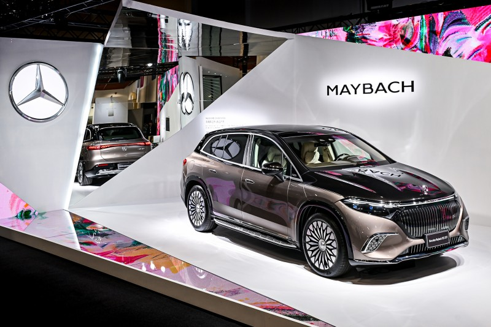
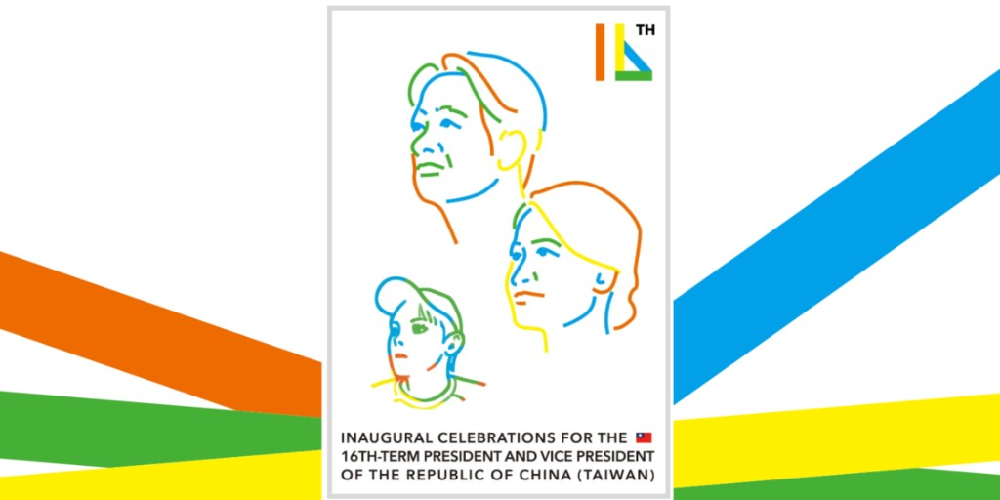
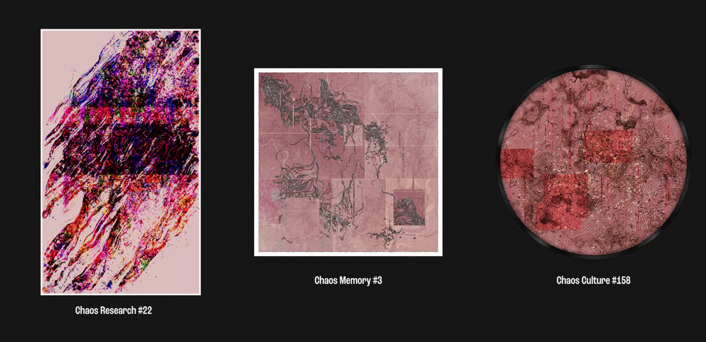

我如何使用 LLM
從結構到創作的工作方法論How I Use LLMs
A Methodology from Structure to Creation
王新仁 ｜ Aluan
生成式藝術家・創意程式設計師・akaSwap 共同創辦人Generative Artist · Creative Coder · Co-founder of akaSwap
工具：Claude Code / Cursor / CoworkTools: Claude Code / Cursor / Cowork
作品只是表象，背後都是結構。
留下錨點，讓一切可以被索引。The work is just the surface. Structure is what lies beneath.
Leave anchors. Make everything indexable.
↓ 向下滾動開始↓ Scroll to begin
01 — About the Artist
王新仁 ｜ Aluan Wang
Ileivoivm——「aluan wang」經 Affine Cipher 加密後的產物。
Ileivoivm — the result of running "aluan wang" through an Affine Cipher.
INPUT aluan wang
CIPHER Affine (slope=5, intercept=8)
OUTPUT ileiv oivm → Ileivoivm
生成式藝術家
創意程式設計師
akaSwap 共同創辦人
北藝大新媒體藝術碩士
台灣首位 Art Blocks 藝術家
台灣首位 verse.works 長篇藝術家
Generative Artist
Creative Coder
Co-founder, akaSwap
MFA, New Media Art, TNUA
First Taiwanese artist on Art Blocks
First Taiwanese artist on verse.works
1982 年生於台中。超過 15 年數位與生成藝術經驗。作品展出於國立台灣美術館、尊彩藝術中心、新加坡藝術科學博物館等。兩度獲台北數位藝術節首獎（2012、2015）。
Born 1982, Taichung. 15+ years in digital and generative art. Exhibited at National Taiwan Museum of Fine Arts, Liang Gallery, ArtScience Museum Singapore. Two-time Grand Prize winner at Taipei Digital Art Festival (2012, 2015).
01 — Statement

我不創造圖像，我建構的是能記住決策如何發生的系統。
在我的作品裡，繪畫存在於時間之中，而不是形式之上。
你所看到的不是結果，而是人類意圖殘留下來的痕跡。
I don't create images — I build systems that remember how decisions were made.
In my work, painting exists in time, not in form.
What you see is not the outcome, but the residue of human intention.
15+
年數位藝術經驗Years in Digital Art
Art Blocks
台灣首位藝術家First Taiwanese Artist
2×
台北數位藝術節首獎Taipei Digital Art Grand Prize
02 — Selected Cases
藝術合作案例Art Collaborations

Mercedes-Maybach × Art Taipei 2024Mercedes-Maybach × Art Taipei 2024
臺北國際藝術博覽會｜數位生成藝術裝置Taipei International Art Fair | Generative Art Installation
台灣賓士以「Welcome to Beyond」為題，攜手 Mercedes-Maybach EQS 680 SUV 進駐 Art Taipei。
展區核心為數位生成藝術作品《春分》——兩層演算法圖層堆疊，季節遞嬗與自然循環轉譯為流動的視覺語彙。
觀眾透過互動螢幕觸發畫面生成。鏡面裝置在現實與虛幻之間折射出無限延伸的空間。
Mercedes-Benz Taiwan brought the Maybach EQS 680 SUV to Art Taipei under the theme "Welcome to Beyond."
The centerpiece was a generative artwork, Spring Equinox — two algorithmic layers stacked, translating seasonal cycles into flowing visual language.
Visitors triggered real-time generation through interactive screens. Mirrored installations refracted infinite space between reality and illusion.
生成式藝術Generative Art
互動裝置Interactive Installation
Art Taipei 2024

總統就職典禮 × 生成式 NFTPresidential Inauguration × Generative NFT
2024 · 520 就職紀念｜akaSwap2024 · Inauguration Commemoration | akaSwap
2024 年總統就職典禮，主視覺以橘、黃、藍、綠四色線段象徵自由、民主、自信、友善。
與 akaSwap 合作開發AI 風格轉換系統——民眾自拍後，演算法即時將肖像轉化為就職主視覺的彩色線段風格，並自動鑄造為 Tezos 鏈上的 NFT。
每一張臉都成為國家敘事的一部分。十萬人共同參與的集體創作。
The 2024 Presidential Inauguration key visual used orange, yellow, blue, and green lines to symbolize freedom, democracy, confidence, and kindness.
In collaboration with akaSwap, we built an AI style-transfer system — selfies were algorithmically transformed into the inauguration's colored-line aesthetic, then auto-minted as NFTs on Tezos.
Every face became part of a national narrative. A collective creation by 100,000 people.
AI 風格轉換AI Style Transfer
NFT 鑄造NFT Minting
Tezos 區塊鏈Tezos Blockchain
Maybach 展間。總統府前。
演算法是語言，結構是骨架。The Maybach showroom. The Presidential Office.
Algorithms are the language. Structure is the skeleton.
03 — 從取樣開始，從濾波結束
從取樣開始，從濾波結束Start with Sampling, End with Filtering
早期用 Pure Data 創作。Pd 是圖像化的程式語言，其中有個功能叫陣列（array）。
I started making work with Pure Data. Pd is a visual programming language with a core feature: the array.
一排格子，每格存一個數值。關鍵在於怎麼讀：
A row of cells, each holding a number. The key is how you read it:
照順序讀Read sequentially
一段聲音A sound clip
慢速讀Read slowly
聲音變低、變長Pitch drops, duration stretches
快速讀Read fast
聲音變高、壓縮Pitch rises, time compresses
亂數跳讀，限制大三度Random jumps, capped at major thirds
和諧的旋律A harmonious melody
當 MIDI 譜讀Read as MIDI score
一首曲子A composition
當封包讀Read as envelope
一個音色的形狀The shape of a timbre
資料沒變，容器沒變。變的是讀取的方式。
建立資料集只是開始。設定讀取的方法，才有意思。The data didn't change. The container didn't change. Only the way you read it did.
Building the dataset is just the start. Designing how to read it — that's where it gets interesting.
後來我做的很多作品，本質上都在做同一件事：替同一份資料發明新的讀法。
Most of my work since then has been doing the same thing: inventing new ways to read the same data.
04 — Deep Dive · 地景 · 2021
GeoPunk — 地誌龐克GeoPunk — Territorial Punk
Paths 系列（Path to the Past / Future / End）的番外篇。我最早的區塊鏈生成藝術作品。
「地誌龐克」——重新探索地理空間的定義。以「龐克」為名，挑戰疆界切分。
A spin-off from the Paths series (Path to the Past / Future / End). My earliest blockchain generative artwork.
"GeoPunk" — redefining geographic space. Named "punk" to challenge how borders are drawn.
159 個地址橫跨北京、台灣、美國、英國、加拿大。GPS 座標封裝進 JSON，聲音與敘述以摩斯電碼加密。程式隨機抽取經緯度，拉取衛星影像，GLSL shader 將地表紋理位移、撕裂、重組。
159 addresses spanning Beijing, Taiwan, the US, UK, and Canada. GPS coordinates packed into JSON, sound and narrative encrypted in Morse code. The program randomly picks coordinates, fetches satellite imagery, and GLSL shaders displace, tear, and reassemble the terrain.
JSON 座標
→
衛星影像
→
GLSL Shader
→
3D 幾何體
→
🏔 地景雕塑
+
摩斯電碼

每一件作品都是一次對地球表面的儀式性採樣。
國界消融，衛星的凝視經演算法轉譯，成為無法被複製的數位地層。
同一份座標，可以被讀成地景，也可以被讀成敘事。Each piece is a ritual sampling of the Earth's surface.
Borders dissolve. Satellite gazes, translated by algorithms, become irreplicable digital strata.
The same coordinates can be read as landscape — or as narrative.
05 — Origin · 2021
作品背後都是結構Behind Every Piece Lies Structure
Good Vibrations — Art Blocks 上的第一件長篇生成藝術作品。台灣首位登上該平台的藝術家。旋轉的圓弧與線段互動，交叉觸發聲音。
Good Vibrations — my first long-form generative work on Art Blocks. The first Taiwanese artist on the platform. Spinning arcs and lines interact, triggering sound at every crossing.
按下 A+S+D+F，畫面切成「樂譜模式」，揭示每個 token 背後的音樂結構。後來空投 B-side 給所有持有者——每張對應背後的聲響與視覺邏輯。一張樂譜，一份菜單。
Press A+S+D+F and the canvas flips to "score mode," revealing the musical structure behind each token. Later I airdropped a B-side to every holder — each one mapping to its sonic and visual logic. One score, one recipe.
hash
→
seed
→
確定性隨機數
→
所有參數
→
🎵 獨特的曲子
作品的本質是結構。
結構可以被記錄、被還原、被重新生成。
同一份 hash，可以被讀成視覺，也可以被讀成樂譜。The essence of a work is its structure.
Structure can be recorded, restored, regenerated.
The same hash can be read as visuals — or as a musical score.
06 — Deep Dive · 混沌 · 2021–22
Chaos 三部曲：作品吃作品The Chaos Trilogy: Art Feeding on Art
GeoPunk 取樣地球。Chaos 取樣自己。
作品以前作為原料，層層遞迴，生成新的混沌。
GeoPunk sampled the Earth. Chaos sampled itself.
Each piece consumes its predecessors, recursing layer by layer into new chaos.

Chaos Research
2021.12 · fxhash（Tezos）2021.12 · fxhash (Tezos)
在 Perlin Noise 流場之上疊加一層神秘訊號——源自我自己的 NFT 收藏。收藏品經變形，成為粒子、顏色、造型的隱藏基底。藏在 IPFS 程式碼裡。A hidden signal layered on top of Perlin Noise flow fields — sourced from my own NFT collection. Collected works, transformed, became the secret foundation for particles, colors, and forms. Buried in the IPFS code.
自我取樣Self-sampling
IPFS 隱藏檔Hidden IPFS files
Chaos Memory
2022.04 · fxhash
按 Q / W / E / R 切換長方形、正方形、圓形。IPFS 裡藏著透納的畫作局部、Research 的圖片、Memory 自身。加密回文：ILEIVOIVM。Press Q / W / E / R to toggle rectangles, squares, circles. Hidden in IPFS: fragments of Turner paintings, Research images, and Memory itself. Encrypted palindrome: ILEIVOIVM.
透納取樣Turner sampling
自我遞迴Self-recursion
Chaos Culture
2022.05 · Art Basel HK
再次萃取 Research 與 Memory。圓形構圖如培養皿，等高線如俯視衛星地圖。巴塞爾藝博會香港現場發表。三幕劇的終章。Research and Memory distilled once more. Circular compositions like petri dishes, contour lines like satellite maps. Premiered at Art Basel Hong Kong. The final act of a three-part play.
再次取樣Re-sampling
Art Basel HK
我的收藏
→
Research
自我取樣
→
Memory
+ 透納 + 自身
→
Culture
再次萃取
Chaos 三部曲為即時生成作品，請於桌面裝置瀏覽以獲得完整體驗。
Research、Memory、Culture。
取樣與萃取，本質上與加密解密相近。
同一份前作，可以被讀成素材，也可以被讀成下一件作品。Research, Memory, Culture.
Sampling and distilling are, at their core, akin to encryption and decryption.
The same prior work can be read as raw material — or as the next piece.
07 — Methodology
JSON 作為記憶層JSON as the Memory Layer
LLM 的上下文有限，記憶會斷。
JSON 和 .md 就是錨點。
LLM context is finite. Memory breaks.
JSON and .md are the anchors.
故事Story
筆觸Brushstroke
行為Behavior
08 — Deep Dive · 小說
《修仙-七玄關》：故事的外部記憶Seven Gates: External Memory for a Novel
一個橫跨宗教、犯罪與超自然的長篇小說。角色在第三章說的話不能跟第一章矛盾，伏筆埋了就要收。
A long-form novel spanning religion, crime, and the supernatural. What a character says in chapter three can't contradict chapter one. Every foreshadowing must pay off.
story-structured.json
{
"chapter_1": {
"segments": {
"segment_1": {
"title": "序曲－雨中的電話",
"summary": "林承祐在深夜接到命案報告...",
"content": "（完整文本）",
"analysis": {
"setting": "嘉義市區",
"characters": ["林承祐", "小陳"],
"emotional_tone": "孤獨、麻木、恐懼",
"foreshadowing": "宗教案件的陰影重現"
}
}
}
}
}
每個段落附帶 analysis。寫第五章時回溯前面所有 analysis，情緒曲線連貫，伏筆正確延續。
Every segment carries an analysis. When writing chapter five, I trace back through all prior analyses — emotional arcs stay coherent, foreshadowing threads continue correctly.
不要期待 LLM 記住一切。主動幫它建索引。Don't expect the LLM to remember everything. Build the index for it.
09 — Deep Dive · 水墨
InkField：AI 用 JSON 畫水墨InkField: AI Paints Ink Wash via JSON
AI 可以畫一幅水墨。不是操作滑鼠，不是生成像素——是輸出一份 JSON，引擎還原成完整畫作。
AI can paint ink wash. Not by moving a mouse, not by generating pixels — by outputting a JSON file that the engine renders into a complete painting.
AI 生成 JSON
→
事件序列
→
引擎還原
→
完整水墨畫作
錄製系統只記錄事件（筆觸參數 + 種子值），不記錄像素。雙種子確定性系統，99.9% 一致性。一幅作品 < 100KB。
The recording system captures events (stroke parameters + seed values), not pixels. Dual-seed deterministic system, 99.9% consistency. One painting < 100KB.
Claude Code 開發，CLAUDE.md 管理規範，doc/ 保留每次迭代的技術文檔。
Built with Claude Code. CLAUDE.md governs project specs. doc/ preserves technical docs from every iteration.
10 — Deep Dive · 植物
PolyPaths：觀眾不知道自己正在被記錄PolyPaths: The Audience Doesn't Know They're Being Recorded
觀眾在介面上畫路徑，以為只是在互動。他們不知道每一筆都被記下來了。
Visitors draw paths on the interface, thinking they're just interacting. They don't realize every stroke is being recorded.
路徑壓縮成 hash，塞進 URL。任何人拿到這串 URL，就能還原完整的繪製過程——然後長出一棵植物。
Paths get compressed into a hash, embedded in the URL. Anyone with that URL can replay the entire drawing process — and grow a plant from it.
觀眾畫路徑
→
系統記錄
→
壓縮成 hash
→
URL #data_<hash>
→
還原 JSON
→
生成植物

11 — Toolchain
我的 LLM 工具鏈My LLM Toolchain
12 — Digital Twin
最後一層：用 .md 建立數位分身The Final Layer: Building a Digital Twin with .md
我把 Facebook、X、Threads 上的所有發言下載下來，整理成一份「寫作風格指南」.md：
I downloaded all my posts from Facebook, X, and Threads, and distilled them into a "writing style guide" .md:
核心人格設定Core Persona
身份標籤、人格維度（焦慮的實踐者、浪漫的工程師、傲嬌的推廣者）、生涯軌跡Identity tags, personality axes (anxious practitioner, romantic engineer, tsundere evangelist), career arc
寫作語法公式Writing Formulas
技術體悟型、藝術哲學型、生活廢文型、市場喊話型——各有結構模板Tech-epiphany mode, art-philosophy mode, shitpost mode, market-rally mode — each with its own structural template
關鍵詞彙與口頭禪Key Vocabulary & Catchphrases
情緒助詞、稱謂系統、技術術語、標點 / Emoji 習慣Mood particles, naming conventions, technical jargon, punctuation & emoji habits
句型風格Sentence Patterns
反問句、極端對比、擬人化、動漫梗、中英夾雜規則Rhetorical questions, extreme contrasts, personification, anime references, code-switching rules
LLM 可以 index 我的思考方式、表達習慣、價值觀。
它不再是助理。它是一個模擬我的 agent。The LLM can index my way of thinking, my habits of expression, my values.
It's no longer an assistant. It's an agent that simulates me.
13 — Summary
留下錨點，讓一切可以被 indexLeave Anchors. Make Everything Indexable.
作品層
可重播
記憶層
可索引
協作層
可延續
人格層
可模擬
Work
Replayable
Memory
Indexable
Collab
Continuable
Persona
Simulable
結構不是限制，結構是自由。
當我不在場時，
別人會怎麼重組我？Structure is not constraint. Structure is freedom.
When I'm no longer present,
how will others reassemble me?
#VibeCoding
#GenArt
#LLM
#當我不在場時別人會怎麼重組我
阿亂｜王新仁｜2026Aluan Wang | 2026
Links
延伸閱讀Further Reading